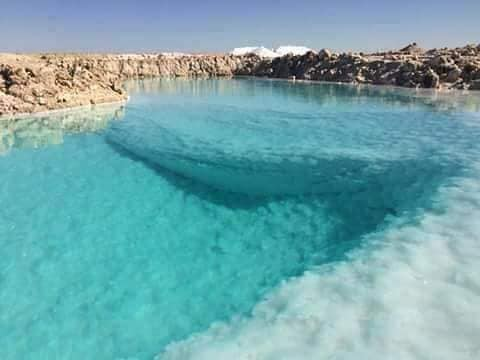

ملاحة الرايزونية
Rhyzoun salt flat
ملاحة الرايزونية
بحيرة مالحة تقع في وادي النطرون، وتُعرف باسم "بحيرة السماء". تتميز بتركيز عالٍ من الأملاح الطبيعية، وتعد جزءاً من البيئة الفريدة للصحراء الغربية.
الموقع
تقع الملاحة في الجزء الشمالي الشرقي من وادي النطرون بمحافظة البحيرة، ضمن منطقة صحراوية جافة.
الخصائص الملحية
تحتوي مياه الملاحة على معدن النطرون الطبيعي، وهو مزيج من كربونات وبيكربونات الصوديوم، بالإضافة إلى كلوريد وكبريتات الصوديوم، مما يجعلها مالحة للغاية.
الأهمية التاريخية
استخدم المصريون القدماء أملاح النطرون في التحنيط، وكانت ترسباتها ذات قيمة تجارية عالية وتم تصديرها للعالم القديم.
الحياة البرية والبيئة
تعد الملاحة جزءاً من بيئة صحراوية محمية، وتستضيف أنواعاً محمية من الحيوانات مثل الغزلان المصرية، إضافةً إلى كونها مكاناً للسياحة العلاجية.